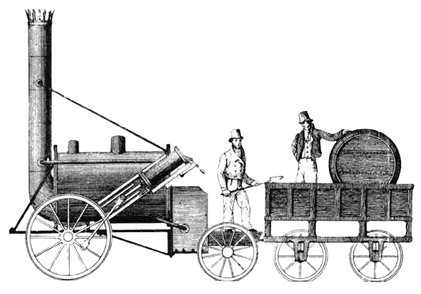
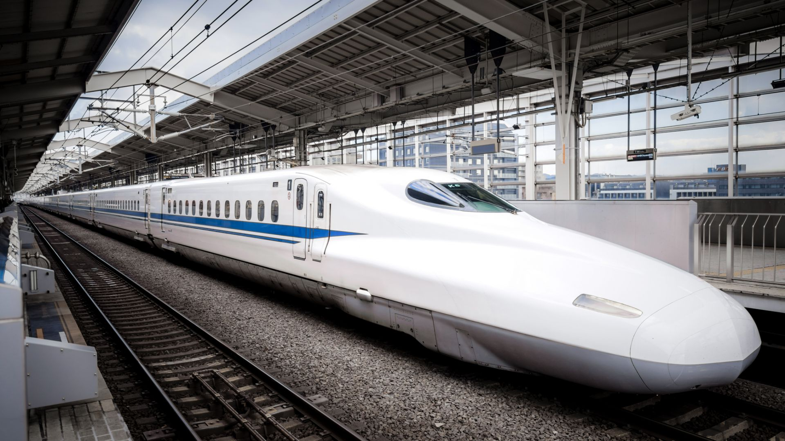

1800-е: Първи парни локомотиви
Stephenson's Rocket – Един от първите парни локомотиви, променил транспорта през 19 век.
Stockton & Darlington Railway – Първата железопътна линия, използваща парни локомотиви.

1900-е: Електрически и дизелови влакове
BR 01 – Немски парен локомотив, използван за дълги разстояния.
Електрически локомотив от 1900-те – Първите електрически локомотиви, революционизирали железниците.

2000-е: Високоскоростни влакове
Shinkansen – Японски високоскоростен влак, символ на модерния транспорт.
Siemens Velaro – Европейски високоскоростен влак, достигащ до 350 км/ч.
